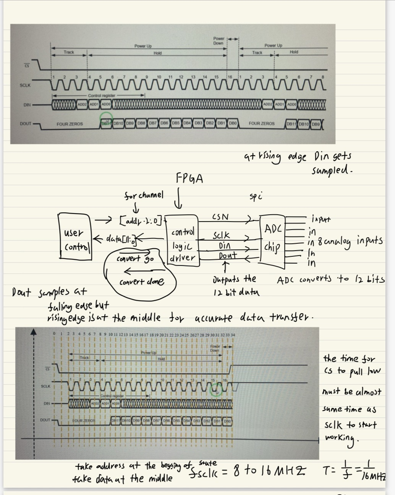
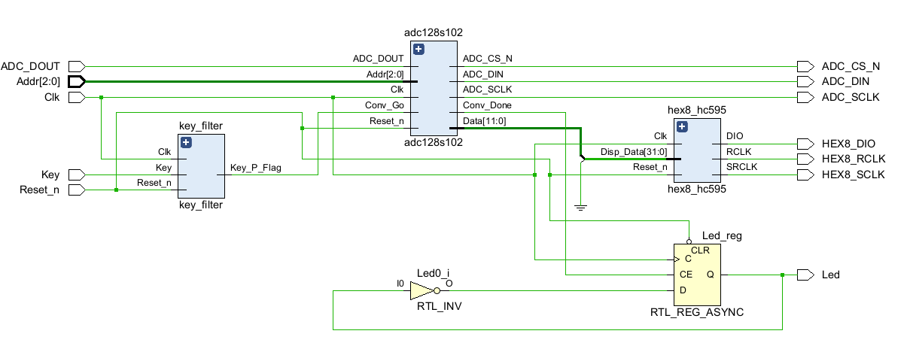
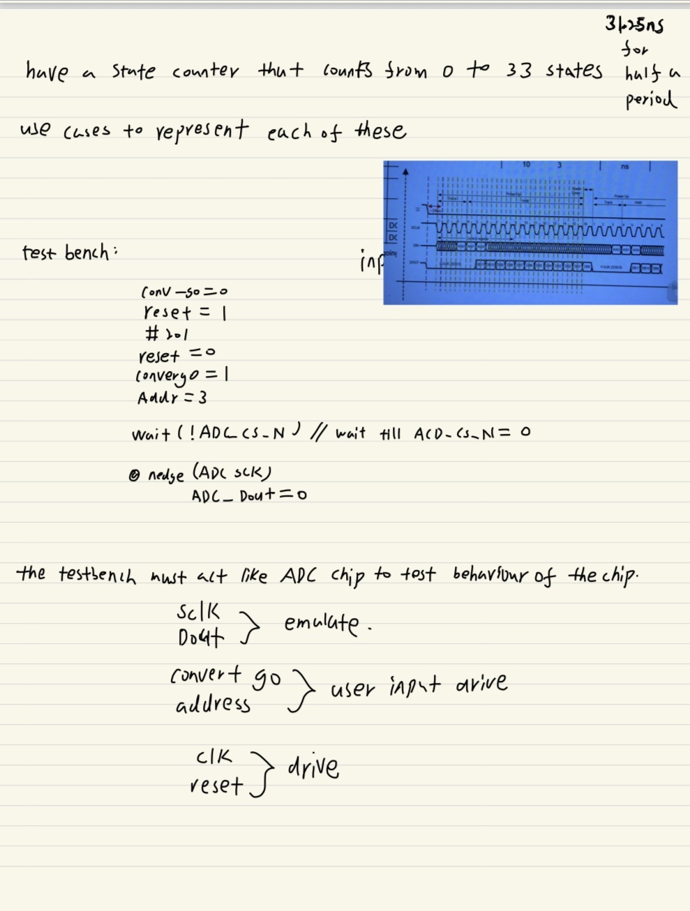
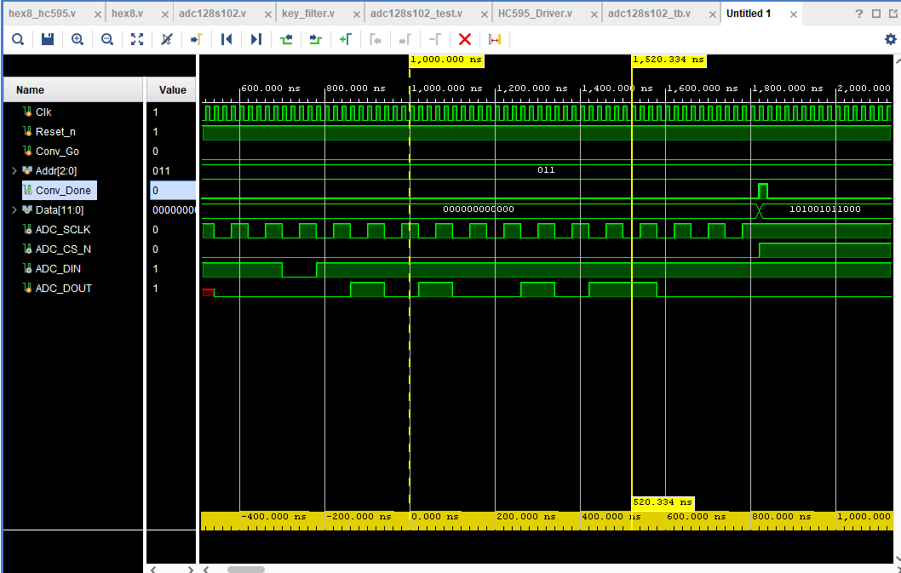
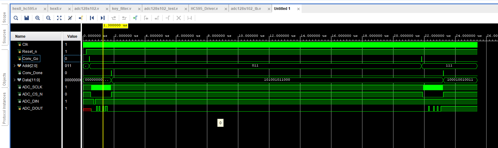

Project Overview
In high-performance digital systems, the Analog-to-Digital Converter (ADC) serves as the critical bridge between physical sensors and computational logic. This project involved engineering a high-fidelity Verilog driver for the TI ADC128S102, an 8-channel, 12-bit CMOS ADC. The objective was to create a robust Hardware Abstraction Layer (HAL) that provides zero-jitter, cycle-accurate data acquisition for downstream AI accelerators and signal processing modules.

Hardware Architecture
The system architecture is centered on a customized Linear Sequence Machine (LSM) implemented on an FPGA. Unlike standard loop-based SPI controllers, the LSM explicitly defines every individual clock edge transition required by the TI datasheet. This architecture ensures that the 12.5MHz serial clock (SCLK) is perfectly synchronized with the 3-bit channel address input (DIN) and the serial data return (DOUT).
To ensure deterministic timing across the 50MHz master clock domain, I implemented a precise clock divider based on the formula: $$MCNT\_DIV\_CNT = \left(\frac{f_{clk}}{2 \times f_{sclk}}\right) - 1$$. This provides a stable 12.5MHz metronome for the state machine, allowing the controller to complete a full 16-cycle conversion frame in under 1.3 microseconds.

Challenges & Solutions
Challenge: Timing Jitter and Accumulative Error in Loop-based FSMs. Traditional SPI drivers utilizing bit-counters and branching logic can introduce micro-delays or "bubbles" in the pipeline, especially when jumping between IDLE and ACTIVE states. In precision imaging or AI contexts, even a single-cycle timing shift during the 12-bit sampling phase can lead to data corruption.
Solution: 35-State Linear Sequence Machine. I bypassed conditional branching by hardcoding a 35-state linear timeline. By explicitly mapping each operation to a specific state (e.g., MSB Address Latching at State 6, MSB Result Sampling at State 11), I eliminated all possible sources of architectural jitter. This 1:1 mapping between the Verilog RTL and the TI timing diagram ensures 100% reliability across all 8 multiplexed channels.
always@(posedge Clk) begin
if(DIV_CNT == MCNT_DIV_CNT) begin
case(LSM_CNT)
6: begin ADC_SCLK <= 0; ADC_DIN <= r_Addr[2]; end
11: begin ADC_SCLK <= 1; Data_r[11] <= ADC_DOUT; end
34: begin ADC_CS_N <= 1; Conv_Done <= 1; end
endcase
end
end
Challenge: Data Corruption During High-Frequency Triggers. If the external CPU or state machine changes the target channel address midway through an active 16-cycle conversion, the ADC multiplexer may enter an undefined state, resulting in "ghosting" between analog channels.
Solution: Shadow Register Latching and Handshaking.
I engineered a robust handshaking protocol using Conv_Go and Conv_Done signals. The moment a Conv_Go pulse is detected, the 3-bit address is latched into an internal Shadow Register. This register is held constant throughout the conversion, effectively isolating the SPI hardware from asynchronous changes in the user control logic. Only once Conv_Done is asserted is the system allowed to request a new channel.
Challenge: Simulation Inefficiency in Behavioral Verification. Validating a 9600 baud or 12.5MHz frame in standard nanosecond-scale behavioral simulation requires millions of cycles, which significantly slows down the debugging workflow in Vivado.
Solution: Parameterized Metronome Overrides.
I utilized defparam overrides in my testbench environment to "shrink" the time scale during verification. By overriding the MCNT_DIV_CNT parameter, I was able to verify the entire 35-state logic sequence in a fraction of the time, allowing for rapid iteration of the Data_r shift-register logic[cite: 67].
Hardware Verification
I utilized a **Logic Analyzer (ILA)** and **Vivado Waveform Analysis** to verify the physical signal integrity of the ADC_SCLK and ADC_DIN lines. The hardware was successfully deployed on a Zynq-7000 SoC, achieving a consistent 1.0 MSPS (Mega Samples Per Second) throughput with zero bit-errors.


As you can see from above waveform, the observed behavior of the signals for CS, DIN, DOUT, and SCL aligns with the expected timing constraints.SCLk flips all the time while DIN and DOUT give data during the time that CS is low.
